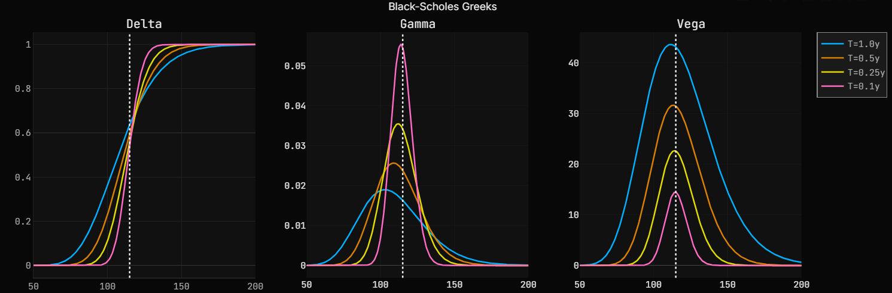
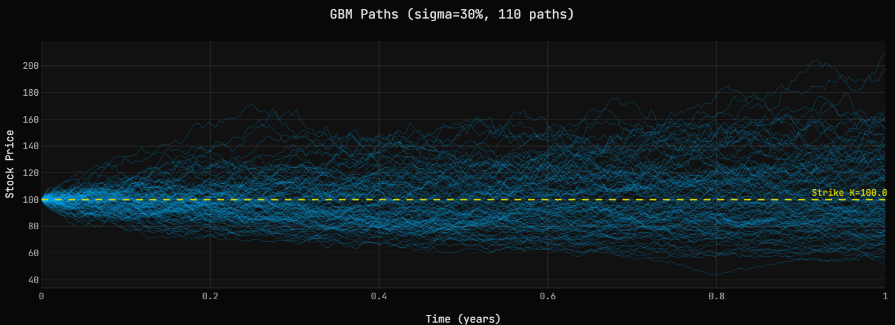
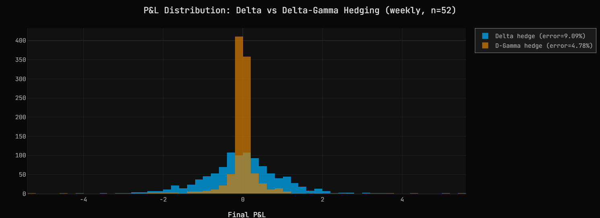
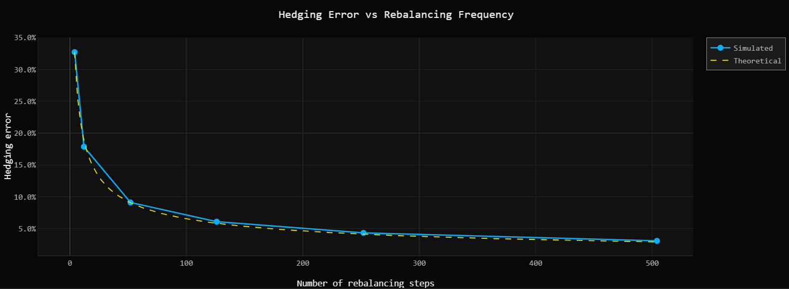
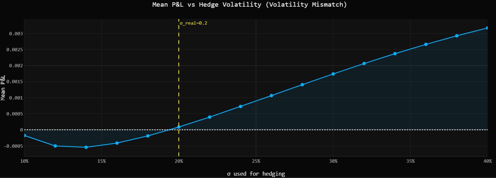
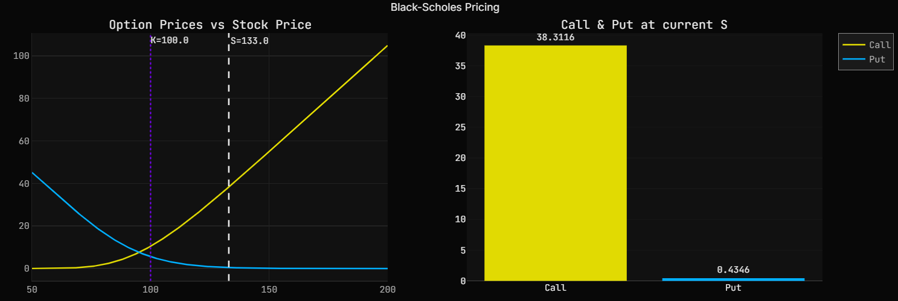

Delta & Gamma
Hedging Simulation
A self-contained Python simulation of European option hedging under Black-Scholes — from GBM path generation to P&L attribution, with an interactive Plotly dashboard.
When a trader sells an option, they collect a premium but take on directional risk: the option's value moves with the underlying. Delta hedging neutralises this exposure by holding $\Delta$ shares per option sold, making the portfolio locally immune to small price moves.
In theory, continuous rebalancing under Black-Scholes replicates the option perfectly — the P&L is zero on every path. In practice, hedging is discrete (daily, weekly), which introduces a residual tracking error that shrinks as rebalancing becomes more frequent.
This project simulates both delta hedging and delta-gamma hedging across thousands of Monte Carlo paths, quantifying the error, studying the effect of rebalancing frequency, and decomposing the P&L into gamma and theta contributions.
Simulate paths
Generate GBM trajectories under the risk-neutral measure. Antithetic variates halve the Monte Carlo variance at no extra cost.
Price & hedge
At each time step, compute delta (and gamma) from the Black-Scholes formula. Rebalance the portfolio and record the P&L.
Analyse the error
Measure hedging error across frequencies, vol mismatches, and option types. Verify the 1/√n convergence law.
Under Black-Scholes, the stock price follows a Geometric Brownian Motion: $$dS = \mu S \, dt + \sigma S \, dW$$ Under the risk-neutral measure ($\mu \to r$), the fair value of a European call is given in closed form. The model assumes constant volatility, no dividends, and frictionless markets.
The simulation is run under the risk-neutral measure, making the GBM drift equal to the risk-free rate $r$ — the correct framework for option pricing and replication.
The Greeks measure the sensitivity of the option price to each market parameter. Delta and gamma drive the hedging strategy; vega captures volatility risk.

DELTA · GAMMA · VEGA — four maturities from T=1y to T=0.1y
The simulation generates 1,000 GBM paths over 252 daily steps. Each path is paired with its antithetic counterpart — the same random draw $Z$ and $-Z$ — which cancels noise algebraically and halves variance with no extra computation.
The hedging loop iterates over time steps, operating on all 1,000 paths simultaneously as numpy arrays. This removes the outer path loop and gives a ~100× speedup over a naive nested loop.

GBM PATHS — σ = 30%, 110 paths, strike K = 100

P&L DISTRIBUTION — daily rebalancing, 1,000 paths
At each rebalancing step, the hedger adjusts the share position to $\Delta(t, S_t)$. With continuous rebalancing, the residual P&L is exactly zero. With discrete rebalancing, the tracking error scales as: $$\text{error} \propto \sigma \sqrt{\frac{T}{n}}$$ Halving the interval cuts the error by ~30%. The distribution should be centered on zero — a biased mean signals model miscalibration.
Delta hedging leaves gamma exposure: large moves in $S$ shift delta and break the hedge. Gamma hedging adds a second option to neutralize $\Gamma$ simultaneously:
With gamma neutralized, the portfolio survives larger moves between rebalancings. Error drops significantly at low rebalancing frequencies — the regime where gamma hedging pays off most.

CALL HEDGE — portfolio vs option price, weekly rebalancing

P&L ATTRIBUTION — gamma vs theta, mean over 1,000 paths
At each time step, the hedging P&L decomposes exactly into:
When $\sigma_{\text{real}} > \sigma_{\text{hedge}}$, realized moves are larger than expected, gamma P&L dominates, and the hedger profits. When $\sigma_{\text{real}} < \sigma_{\text{hedge}}$: theta cost exceeds gamma gains, and P&L is negative. This is vega risk.
1,000 paths, n=252
vs ~4.8% with gamma hedge

ERROR VS FREQUENCY — simulated vs 1/√n theoretical

MEAN P&L VS σ_HEDGE — volatility mismatch effect

BLACK-SCHOLES PRICING — call & put vs spot
DELTA VS GAMMA HEDGE — P&L distribution comparison
European Call & Put under GBM · Delta & Delta-Gamma hedging · Transaction costs · Vol mismatch analysis · P&L attribution (gamma vs theta) · Interactive Plotly dashboard · 37 unit tests
Real market data via yfinance · Historical price extraction with dividend & split adjustment · Realised vs implied volatility comparison · Hedging simulation on real equity paths (S&P 500 constituents)
SOURCE CODE
Full implementation on GitHub — pricing, simulation, hedging, tests, and notebook.
github.com/williamcheymol/delta-hedging ↗INTERACTIVE NOTEBOOK
Run the full dashboard in your browser via Binder — no installation required.
Launch on Binder ↗